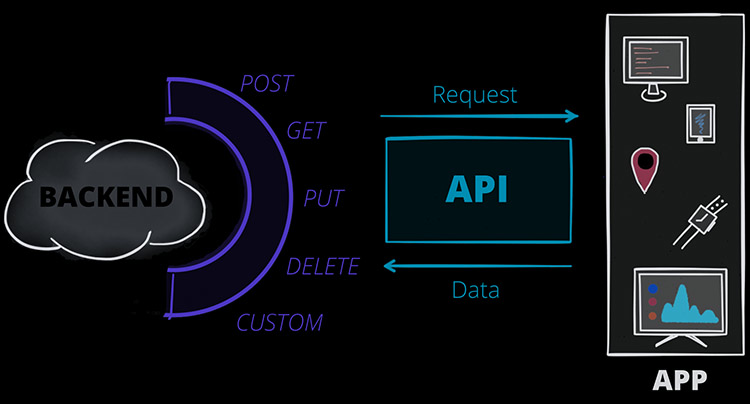
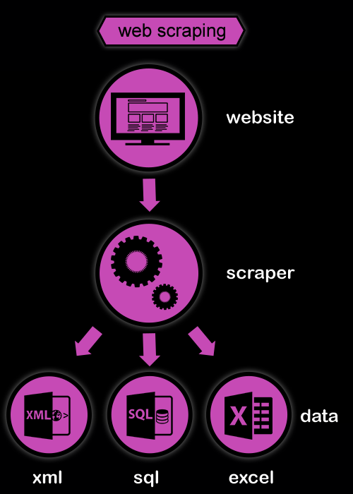
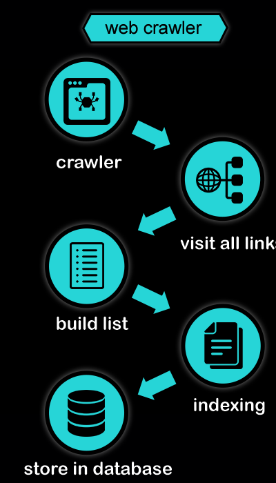

[02] Anskaffelse og innlasting av tekst
Martin Søyland <martin.soyland@stv.uio.no>
Disposisjon
- Strukturerte datasett
- Semistrukturerte data (APIer)
- Ustrukturerte data
- Skraping (med eksempler)
- Kravling (med eksempler)
- Fallgruver
- Oppgave
- Oppsummering
Strukturerte datasett
Strukturerte datasett
- Datasett som er klar out of the box
- oftest 2-dimensjonale:
data[rader, kolonner] - … men mange trenger fortsatt preprosessering
tibble(stortingscrape::cases$root) %>%
select(id, status, type, title_short) %>%
slice_sample(n = 5)## # A tibble: 5 × 4
## id status type title_short
## <chr> <chr> <chr> <chr>
## 1 80332 til_behandling alminneligsak Grunnlovsforslag om ny § 107 (rett til bol…
## 2 79518 behandlet alminneligsak Redegjørelse av utenriksministeren om vikt…
## 3 79329 behandlet budsjett Innstilling fra finanskomiteen om Endringe…
## 4 79932 behandlet alminneligsak Representantforslag om å sørge for at alle…
## 5 77424 behandlet budsjett Endringar i statsbudsjettet 2019 under Olj…Vanlige dataformat
| Format | Står for | R-funksjon |
|---|---|---|
| .csv | Comma Separated Values | read.csv //
readr::read_csv() |
| .txt | Text | readLines() //
textreadr::read_document() |
| .xlsx | Excel | readxl::read_xlsx() |
| .html | HyperText Markup Language | rvest::read:html() |
| .xml | Extensible Markup Language | rvest::read:html() |
| .json | JavaScript Object Notation | jsonlite::read_json() |
| .dta | Stata | haven::read_dta() |
| .sav | SPSS | haven::read_sav() |
| … | Og tusen andre formater… | …med egne R-pakker og funksjoner |
Semistrukturerte data (APIer)
Application Programming Interface:

Mer i forelesning
[05] Bruke API (Stortinget) (uke 38)
Tilfeldig side fra Statens vegvesen
<?xml version="1.0" encoding="UTF-8"?>
<rdf:RDF xmlns:rdf="http://www.w3.org/1999/02/22-rdf-syntax-ns#" xmlns:skos="http://www.w3.org/2004/02/skos/core#">
<rdf:Description rdf:about="https://psi.norge.no/los/ord/parkering-og-hvileplasser">
<rdf:type rdf:resource="http://www.w3.org/2004/02/skos/core#Concept"/>
<skos:inScheme rdf:resource="https://psi.norge.no/los/ontologi/ord"/>
<skos:prefLabel xml:lang="nn">Parkering</skos:prefLabel>
<skos:prefLabel xml:lang="nb">Parkering og hvileplasser</skos:prefLabel>
<skos:prefLabel xml:lang="en">Parking and rest area</skos:prefLabel>
<skos:hiddenLabel xml:lang="nb">Avgiftsparkering</skos:hiddenLabel>
<skos:hiddenLabel xml:lang="nn">Avgiftsparkering</skos:hiddenLabel>
<skos:hiddenLabel xml:lang="nb">Innfartsparkering</skos:hiddenLabel>
<skos:hiddenLabel xml:lang="nn">Innfartsparkering</skos:hiddenLabel>
<skos:hiddenLabel xml:lang="nb">Parkeringsavgift</skos:hiddenLabel>
<skos:hiddenLabel xml:lang="nn">Parkeringsavgift</skos:hiddenLabel>
<skos:hiddenLabel xml:lang="nb">Parkeringsbot</skos:hiddenLabel>
<skos:hiddenLabel xml:lang="nn">Parkeringsbot</skos:hiddenLabel>
<skos:hiddenLabel xml:lang="nb">Parkeringsgebyr</skos:hiddenLabel>
<skos:hiddenLabel xml:lang="nn">Parkeringsgebyr</skos:hiddenLabel>
<skos:hiddenLabel xml:lang="nb">Parkeringskort</skos:hiddenLabel>
<skos:hiddenLabel xml:lang="nn">Parkeringskort</skos:hiddenLabel>
<skos:hiddenLabel xml:lang="nn">Parkeringsløyve</skos:hiddenLabel>
<skos:hiddenLabel xml:lang="nb">Parkeringsløyve</skos:hiddenLabel>
<skos:hiddenLabel xml:lang="nn">Parkeringsløyve</skos:hiddenLabel>
<skos:hiddenLabel xml:lang="nb">Parkeringsplass</skos:hiddenLabel>
<skos:hiddenLabel xml:lang="nn">Parkeringsplass</skos:hiddenLabel>
<skos:hiddenLabel xml:lang="nb">Parkeringstillatelse</skos:hiddenLabel>
<skos:hiddenLabel xml:lang="nn">Rasteplassar</skos:hiddenLabel>
<skos:hiddenLabel xml:lang="nb">Rasteplasser</skos:hiddenLabel>
<skos:hiddenLabel xml:lang="nb">Utfartsparkering</skos:hiddenLabel>
<skos:hiddenLabel xml:lang="nn">Utfartsparkering</skos:hiddenLabel>
<skos:note xml:lang="nn">Det skal vere eitt felles regelverk for all parkeringsverksemd. Regelverket skal syte for lik skilting og like reaksjonar ved brot på føresegnene. Det er også ei obligatorisk godkjenningsordning som gjeld både for kommunar, private parkeringsselskap og andre.</skos:note>
<skos:note xml:lang="nb">Parkeringstillatelser, parkeringsgebyr, regelverk for gateparkering, parkering for forflytningshemmede, klage på parkeringsbot, betaling av parkeringsbot.</skos:note>
<skos:broader rdf:resource="https://psi.norge.no/los/tema/mobilitetstilbud"/>
<skos:broader rdf:resource="https://psi.norge.no/los/tema/veg-og-vegregulering"/>
<skos:broader rdf:resource="https://psi.norge.no/los/tema/yrkestransport"/>
</rdf:Description>
</rdf:RDF>Ustrukturerte data

Skraping vs. kravling


Skraping
- Eksempelhypotese:
Skandinaviske land blir nevnt oftere enn andre land i NOUer fra Utenriksdepartementet
- Utvalg/univers: aller NOUer fra UD
- Datakilde: regjeringen.no
Fremgangsmåte 1: Laste ned alle 7 dokumentene manuelt- Fremgangsmåte 2: Lage en scraper som laster ned og strukturerer dokumentene
Steg 1: Finne data
- Point and click på regjeringen.no
- Inspect
- Finn selector
- Skriv kode og test med én link
library(rvest)
library(stringr)
# rot-url for regjeringen.no
base_url <- "https://www.regjeringen.no/"
# Laster ned siden med alle NOUer fra UD (atm 7 stk)
## str_c(base_url, "no/dokument/nou-ar/id1767/?ownerid=833") %>%
## download.file(., destfile = "./scrape/base.html")
##
# Trekker ut linkene til hver NOU
nou_links <- read_html("./scrape/base.html") %>%
html_elements("h2 > a[data-hitid]") %>%
html_attr("href")
nou_links## [1] "/no/dokumenter/nou-2016-8/id2503028/"
## [2] "/no/dokumenter/nou-2012-2/id669368/"
## [3] "/no/dokumenter/nou-2009-19/id571718/"
## [4] "/no/dokumenter/nou-2008-14/id525832/"
## [5] "/no/dokumenter/nou-2003-32/id149022/"
## [6] "/no/dokumenter/nou-1995-5/id139818/"
## [7] "/no/dokumenter/nou-1994-9/id139452/"Steg 2: Laste ned forside for alle NOUer
- Bruk én lenke som testobjekt først
- Når det virker: Lag en løkke som laster ned alle NOUene sin forside
- Hvis det krasjer på 1 eller flere sider, inspiser og fiks koden
# Laster ned forsiden til hver NOU
for(i in nou_links){
# Trekker ut dokument-id
tmp_id <- str_extract(i, "id[0-9]+")
# Laster ned forsiden til NOU i
str_c(base_url, i) %>%
download.file(., destfile = str_c( "./scrape/nou_forside/",
tmp_id,
".html"))
# Legger til litt tilfeldig søvn
Sys.sleep(2 + abs(rnorm(1, 0)))
# Printer en beskjed til console om at i nå er ferdig
message(str_c(
"Ferdig med: ",
tmp_id,
"\n"
))
}## [1] "id139452.html" "id139818.html" "id149022.html" "id2503028.html"
## [5] "id525832.html" "id571718.html" "id669368.html"nou_forsider <- lapply(
list.files("./scrape/nou_forside/", full.names = TRUE),
read_html
)
nou_forsider[[1]]## {html_document}
## <html class="no-js" lang="no">
## [1] <head>\n<meta http-equiv="Content-Type" content="text/html; charset=UTF-8 ...
## [2] <body class="page-horing ">\r\n\r\n<!-- There is a copy of this in /Error ...Steg 3: Laste ned .pdf for alle NOUene
- Se på forsiden til én NOU og identifiser nedlastingsknappen
- Inspect -> Copy selector -> Rediger og test
- Skriv kode for å trekke ut lenkene
- Last ned
.pdf-filene
nou_pdf_links <- lapply(nou_forsider, function(x){
tmp_content_link <- x %>%
html_elements("a[title]") %>%
html_attr("href")
tmp_content_link[which(str_detect(tmp_content_link, "\\.pdf$"))]
}) %>% unlist()
nou_pdf_links## [1] "/contentassets/bee23e85425c4fca84346e100bf745c7/no/pdfa/nou199419940009000dddpdfa.pdf"
## [2] "/contentassets/3a80ddef404745e5be000a9f58a762a1/no/pdfa/nou199519950005000dddpdfa.pdf"
## [3] "/contentassets/28ed358f13704ed2bb3c2a7f13a02be9/no/pdfs/nou200320030032000dddpdfs.pdf"
## [4] "/contentassets/09faceca099c4b8bac85ca8495e12d2d/no/pdfs/nou201620160008000dddpdfs.pdf"
## [5] "/contentassets/9b801d1fe4804a9a9e30d8d621a3b021/no/pdfs/nou200820080014000dddpdfs.pdf"
## [6] "/contentassets/0a903cdd09fc423ab21f43c3504f466a/no/pdfs/nou200920090019000dddpdfs.pdf"
## [7] "/contentassets/5d3982d042a2472eb1b20639cd8b2341/no/pdfs/nou201220120002000dddpdfs.pdf"# Laster ned pdf til hver NOU
for(i in nou_pdf_links){
# Trekker ut dokument-id
tmp_id <- str_extract(i, "nou(.*?)\\.pdf$")
# Laster ned forsiden til NOU i
str_c(base_url, i) %>%
download.file(., destfile = str_c("./scrape/nou_pdf/",
tmp_id))
# Legger til litt tilfeldig søvn
Sys.sleep(2 + abs(rnorm(1, 0)))
# Printer en beskjed til console om at i nå er ferdig
message(str_c(
"Ferdig med: ",
tmp_id,
"\n"
))
}
list.files("./scrape/nou_pdf/")## [1] "nou199419940009000dddpdfa.pdf" "nou199519950005000dddpdfa.pdf"
## [3] "nou200320030032000dddpdfs.pdf" "nou200820080014000dddpdfs.pdf"
## [5] "nou200920090019000dddpdfs.pdf" "nou201220120002000dddpdfs.pdf"
## [7] "nou201620160008000dddpdfs.pdf"Steg 4: Laste inn .pdf-filene
- Her bruker vi
textreadr::read_pdf()
library(textreadr)
nou_pdfer <- list.files("./scrape/nou_pdf/", full.names = TRUE)
nou_tekst <- lapply(nou_pdfer, function(x){
read_pdf(x) %>% tibble()
})
nou_tekst[[1]] %>%
head(., 4)## # A tibble: 4 × 3
## page_id element_id text
## <int> <int> <chr>
## 1 1 1 "NORGES OFFENTLIGE UTREDNINGER\n NOU 19…
## 2 2 1 "Til Utenriksdepartementet\nHurtigbåtutvalget som ble oppn…
## 3 3 1 "NOU 1994:9\nKapittel 1 Om sikkerhet og forhold so…
## 4 4 1 "NOU 1994:9\nKapittel 1 Om sikkerhet og forhold som …Steg 5: Konvertere til .txt
Steg 6: Neste forelesning …
… men husk hypotesen:
Skandinaviske land blir nevnt oftere enn andre land i NOUer fra Utenriksdepartementet
OBS!
| Dependent variable: | |
| n | |
| Skand. land (nei) | -168.631*** |
| (52.106) | |
| Konstantledd | 203.200*** |
| (51.343) | |
| Observations | 172 |
| Adjusted R2 | 0.052 |
| Note: | p<0.1; p<0.05; p<0.01 |
Kravling

- La oss kravle litt rundt på Virksomme ord
- Dette vil ta lang tid! Husk å teste først
- Se på “Taler – kronologisk”
- Gå inn på en tale og legg merke til linken
/tale/xxxx/ - Setter kravleren til å bare lagre disse
Ca. 4 timer kjøretid
virkord_filer <- list.files("./crawl/virksommeord.no-101413",
full.names = TRUE)
head(virkord_filer)## [1] "./crawl/virksommeord.no-101413/1 .html"
## [2] "./crawl/virksommeord.no-101413/10 .html"
## [3] "./crawl/virksommeord.no-101413/100 .html"
## [4] "./crawl/virksommeord.no-101413/1000 .html"
## [5] "./crawl/virksommeord.no-101413/1001 .html"
## [6] "./crawl/virksommeord.no-101413/1002 .html"## [1] 5100Kravlingens etterarbeid
virkord_html <- lapply(virkord_filer, rvest::read_html)
virkord_data <- lapply(1:length(virkord_html), function(x){
message(x)
tmp_tekst <- virkord_html[[x]] %>%
html_elements("div[class='document'] > p") %>%
html_text()
if(identical(character(), tmp_tekst)){
tmp_tekst <- virkord_html[[x]] %>%
html_elements("tr[valign='top']") %>%
html_text()
}
if(identical(character(), tmp_tekst)){
tmp_tekst <- virkord_html[[x]] %>%
html_elements("div[class='document'] > h3") %>%
html_text() %>%
str_split(., "\\n") %>%
unlist()
}
tmp_forfatter <- virkord_html[[x]] %>%
html_elements("div[class='tale-header'] > ul[class='byline'] > li > a") %>%
html_text() %>%
str_replace_all(., "\\s+", " ") %>%
.[1]
tmp_forfatter_link <- virkord_html[[x]] %>%
html_elements("div[class='tale-header'] > ul[class='byline'] > li > a") %>%
html_attr("href") %>%
.[which(str_detect(., "person"))]
tmp_tittel <- virkord_html[[x]] %>%
html_elements("div[class='tale-header'] > h1") %>%
html_text() %>%
str_replace_all(., "\\s+", " ")
tmp_data <- tibble(
tittel = tmp_tittel,
forfatter = tmp_forfatter,
forfatter_link = tmp_forfatter_link,
avsnitt = 1:length(tmp_tekst),
tekst = tmp_tekst
)
return(tmp_data)
})
virkord <- bind_rows(virkord_data)
# save(virkord, file = "./crawl/virksommeord.rda")## # A tibble: 6 × 5
## tittel forfatter forfatter_link avsnitt tekst
## <chr> <chr> <chr> <int> <chr>
## 1 Angrepene mot Oslo og Utøya 22. juli -… Anniken … /person/2721/ 62 Et v…
## 2 Snart kommer vår dag Erna Sol… /person/604/ 85 Nyut…
## 3 1. mai-tale Hans Ola… /person/2201/ 36 Kamp…
## 4 Et redskap for frihet og fred Kjell Ma… /person/168/ 32 Den …
## 5 Vi står foran et historisk retningsvalg Espen Ba… /person/3461/ 195 Våre…
## 6 Digitalisering og omstilling av Norge Jan Tore… /person/4561/ 70 Takk…Fallgruver

Front-end vs. back-end
- Regjeringensarkiv
- regjeringen.no har ikke åpen API
- men har en back-end API som henter data for oss som gjør siden lesbar
- Se på Network i Inspect
- data henter .json-fil back-end
- merk:
"Page":1,"Hits":20,"TotalHits":71, osv
Overlaste serveren (timeout)
Ikke lagre
- Alltid lagre lokalt!
- slipper å hente samme side flere ganger
- stabilitet – nettsider endrer seg
robots.txt
robots.txteksisterer på de fleste nettsider- beskriver hva som er lov og ikke lov å skrape
## [1] "User-agent: *"
## [2] "Disallow: /tegneserier/salesposter"
## [3] "Disallow: /poll"
## [4] ""
## [5] "user-agent: Googlebot-News"
## [6] "disallow: /annonsorinnhold/"
## [7] "disallow: /kommersielt-innhold/"
## [8] "disallow: /innstikk/"
## [9] "disallow: /?embed=true"
## [10] "disallow: /arkiv/"
## [11] "disallow: /front/"
## [12] "disallow: /ads/prewarm/"
## [13] "disallow: /adblock-survey/"
## [14] ""
## [15] "Sitemap: https://www.vg.no/sitemap/files/articles-48hrs.xml"
## [16] "Sitemap: https://www.vg.no/sitemap/sitemap.xml"